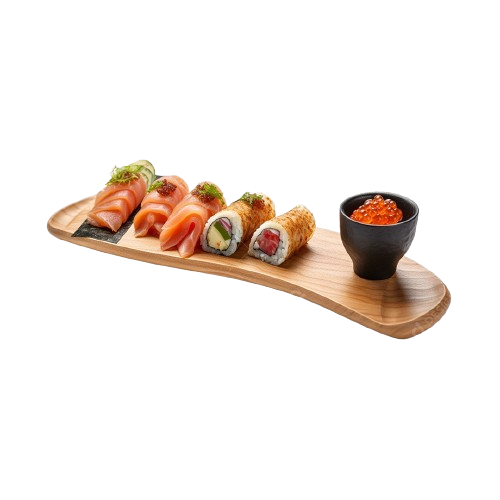

Sobre nós

O Sushi Conceito é uma fusão de tradição e inovação na culinária japonesa, oferecendo uma variedade de pratos clássicos e criações exclusivas do chef. Localizado em um ambiente moderno, o restaurante garante ingredientes frescos e atendimento impecável para uma experiência gastronômica memorável.


Experimente já
Experimente já os nossos deliciosos pratos e surpreenda-se com seus sabores!
Veja Nosso Cardápio!Fale Conosco!